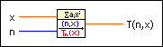
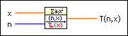
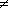

Chebyshev Polynomial VI
Owning Palette: Orthogonal & Non-orthogonal Polynomials VIs
Requires: Full Development System
Calculates the Chebyshev polynomial of order n at the point x.

 Add to the block diagram Add to the block diagram |
 Find on the palette Find on the palette |
Owning Palette: Orthogonal & Non-orthogonal Polynomials VIs
Requires: Full Development System
Calculates the Chebyshev polynomial of order n at the point x.

| Add to the block diagram |
Find on the palette |
 |
x is any real number. |
 |
n is the nonnegative order (integer) of the Chebyshev polynomial. |
 |
T(n,x) is the value of the nth Chebyshev polynomial at the point x. |
The following equation defines the Chebyshev polynomial Tn(x).
Tn(x) = cos(n arccos(x)) for n = 0, 1, 2, ..., and real numbers x.
 | Note The result of this definition does not look like a polynomial at first glance, but you can use trigonometric rules to show that Tn is a polynomial of degree n in the variable x. |
Tn(x) forms the base of the Chebyshev approximation. For i  j, the following equation gives the Chebyshev approximation.
All Tn(x) form an orthogonal system over the weight function
The following illustration shows the graph for the first four Chebyshev polynomials of degrees 0, 1, 2, and 3.